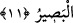

“Ayrılığa düştüğünüz herhangi bir şeyde” kâfirlerle ihtilafa düştüğünüz dinî
konularda “hüküm vermek, Allah’a mahsustur.” O kıyâmet günü haklıyı
mükâfatlandırıp haksızı cezalandıracaktır. “İşte” şânı çok büyük ve hakîm olan “bu
Allah benim Rabbimdir” benim mâlikim yani sahibimdir. Rubûbiyet, Allah’ın bir
sıfatıdır. Bütün işlerimde -ki din düşmanlarının hîlelerini bertaraf etmek de bu
cümledendir- “O’na dayandım.” Din düşmanlarının kötülüklerini bertaraf edip onlara
karşı bana yardım etme husûsunda ve her türlü müşkilâtımda O’ndan başkasına değil
sadece “O’na yönelirim.” Tevekkül devamlılığı olan tek bir iştir. İnâbe ise yerine göre
zaman zaman artıp yenilenen bir durumdur. Bu inceliğe işâret edilmek üzere tevekkülde
mâzi inâbede ise muzari kalıbı tercih edilmiştir.
Âyetteki bu ilk ifâde Peygamberimiz (s.a.)’in müminlere olan sözünü beyan
niteliğindedir. Çünkü ifâdenin devamında “işte bu Allah, benim Rabbim’dir” şeklinde
bir anlatım vardır. Yani din işlerinde kâfirlerin size muhâlif olduğu ve ihtilaf hâlinde
bulunduğunuz hususlarda hüküm vermek Allah’a aiddir. Bu da kıyâmette haklı olanı
ödüllendirip haksız olanı cezalandırmaktır. Buradaki ihtilaf, müçtehitler arasındaki
ihtilafa hamledilemez. Çünkü Peygamber (a.s.)’ın huzurunda içtihat câiz değildir.
et-Te’vîlâtü’n-Necmiyye’de şöyle denmektedir: Allah Teâlâ şer’î konularda ve ilâhî
mârifetlerde âlimlerin ihtilafına işâret etmektedir. İşte bu durumlarda hüküm Allah’ın
kitabına, Peygamber’in sünnetine, ümmetin icmâına, kıyas delillerine yahut ilim ehline
bırakılır. Allah Teâlâ “bilmiyorsanız zikir yani ilim ehline sorunuz” (en-Nahl, 16/43)
buyurmaktadır. İnsanlar bu durumlarda vehm ve hayal âfetiyle şâibeli durumda olan aklî
ve felsefî yorumlara müracat etmemelidir. Çünkü bu durumda nefis ve şeytan ortaya bir
takım şüpheler atarak sonuca tesir etmektedir. Tevhitte en ufak bir şüphe ise küfürdür.
Hevâ ve hevesine uyan nice bid’at ehli insanların ve filozofların bu hususlarda sıratı
mustakimden ve dosdoğru dinden ayakları kaymıştır.
Âyette şu husûsa işâret edilmektedir: Kalbiniz nefsinizin vesvesesiyle meşgul olur da
hakkınızda verilen hükmün saâdet mi yoksa şakàvet mi olduğunu bilemezseniz, artık işi
Allah’a havâle ediniz. Vakitlerinizi Allah’ın hükmüne râm olarak geçiriniz. Âkıbetinizin
ne olacağına dâir akıllarınız için bir ilim ve mârifet yolu olmayan konularda
düşünmeyiniz.
11. O, gökleri ve yeri yoktan yaratandır. Size kendinizden eşler, hayvanlardan da